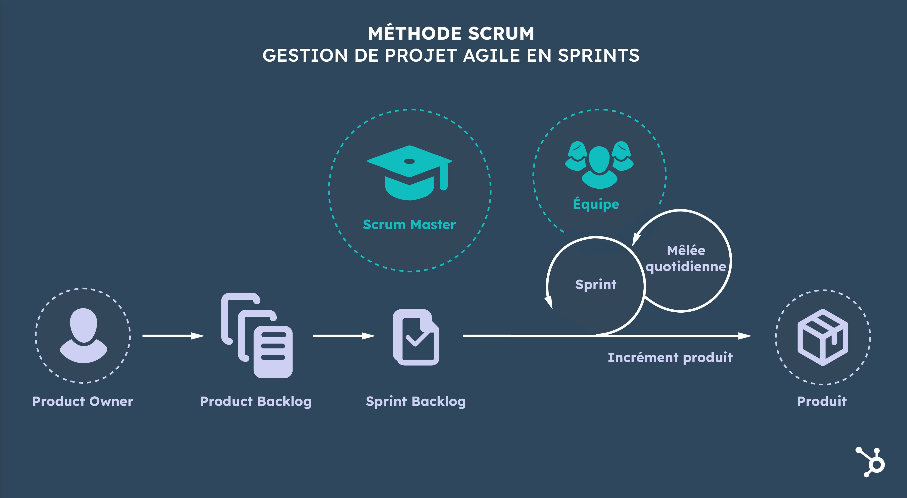

Gestion du Projet
La gestion de ce projet complexe impliquant le développement d'un chatbot pour un cabinet orthodontique a
requis l'adoption de diverses approches et méthodologies de gestion de projet pour assurer une exécution
efficace et conforme aux attentes.
Méthode SMART
La méthode SMART a été employée pour définir clairement les objectifs du projet :
• Spécifique : Chaque tâche, comme l'intégration de MailerCheck et Loqate pour la vérification des emails
et
des numéros de téléphone, avait un but clairement défini pour éviter toute confusion.
• Mesurable : Le succès de ces intégrations était mesuré par la capacité du système à vérifier avec
précision
les données des utilisateurs, ce qui était essentiel pour les communications du cabinet.
• Atteignable : Les objectifs étaient fixés en tenant compte des capacités actuelles de l'équipe et des
technologies disponibles, assurant que les tâches étaient réalisables.
• Réaliste : Chaque objectif était évalué pour s'assurer de sa faisabilité pratique au sein du cadre
temporel
et des ressources disponibles du stage.
• Temporellement défini : Des délais précis étaient fixés pour chaque phase importante, assurant un
progrès
continu et évitant les dérapages du calendrier.

Approche Agile
• Itérations rapides : L'adoption d'une approche agile a permis d'effectuer des itérations rapides sur le
développement du chatbot, notamment en ajustant les fonctionnalités en fonction des retours des utilisateurs
et du personnel du cabinet.
Sprints de développement
Le projet était divisé en sprints bihebdomadaires, où des objectifs spécifiques
étaient fixés et réévalués à la fin de chaque période pour garantir une adaptation constante aux besoins
émergents.
Utilisation de Kanban
• Visualisation du travail : La méthode Kanban a été utilisée pour visualiser le workflow du projet sur un
tableau Kanban physique au sein du bureau du stage. Cela a aidé à suivre l'avancement des tâches, à identifier
les goulots d'étranglement et à prioriser les activités en cours.
• Gestion des flux de travail : Le tableau Kanban a été essentiel pour maintenir un flux de travail continu et
gérer les priorités sans perdre de vue les tâches en attente ou en retard.
Intégration et Conformité des Données
Validation avec MailerCheck et Loqate : Ces outils ont été intégrés pour valider les informations entrées
par les utilisateurs. La gestion de ces intégrations a été traitée comme des mini-projets, chacun avec son
propre cycle de développement, d'intégration, de tests, et de déploiement, en utilisant les principes agiles
et Kanban pour assurer la cohérence et l'efficacité.